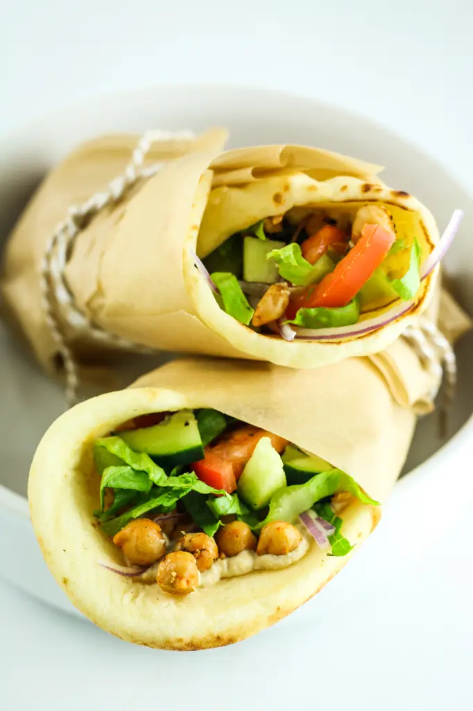

Mediterranean Chickpea Wraps

Description
This Mediterranean chickpea wrap recipe is a quick, vegetarian friendly, meal loaded with chickpeas, hummus, various vegetables, and feta.
These are a great option for lunch, dinner, or snacks and are perfect for meal prepping!
Ingredients
- Wraps (Your choice of tortillas, naan bread, veggie wraps, etc.)
- Chickpeas
- Hummus (we recommend roasted garlic flavored)
- Red Bell Peppers
- Spinach
- Feta
Steps
- Rinse and slice red bell peppers.
- On your choice of wrap, spread a thin layer of hummus.
- Add sliced peppers, spinach, feta, and chickpeas.
- Roll up the wrap tightly (everyone seems to have their own method of this) and enjoy!
Notes:
- We recommend pairing this with soup, salad, or even carrot sticks for a complete meal.
- To add more flavor, you can toss and cook chickpeas in seasoning(s) such as chili powder, cummin, or anything else you enjoy!